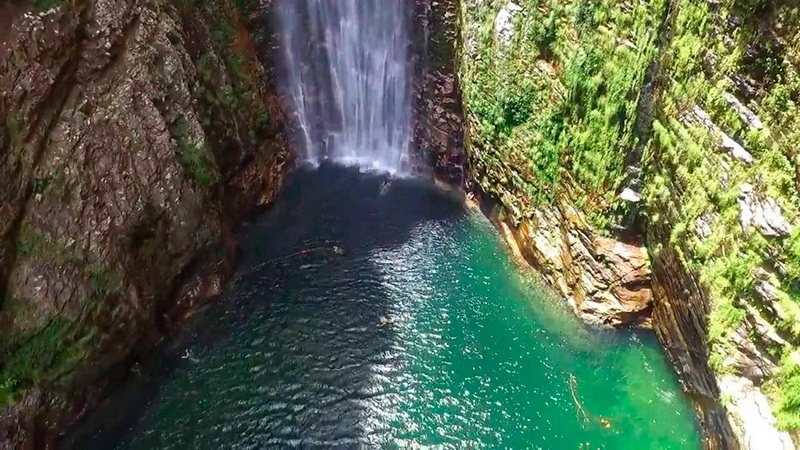
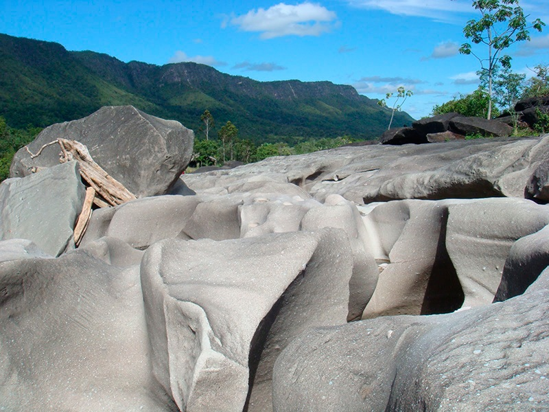
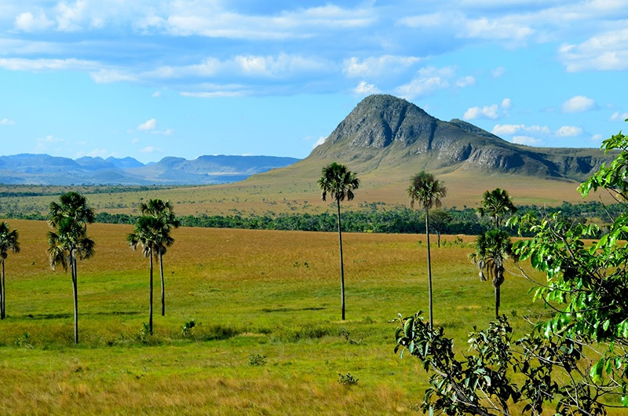
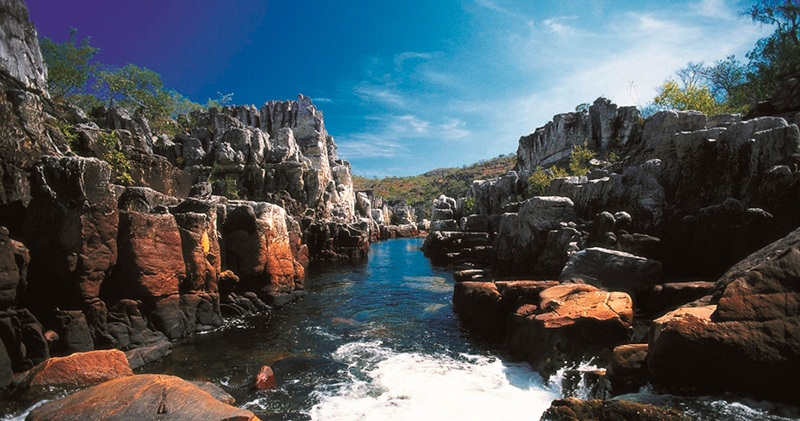
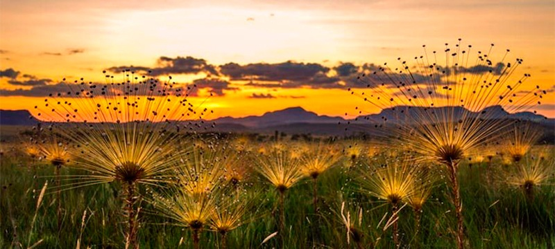

O Parque Nacional da Chapada dos Veadeiros é uma das áreas mais incríveis para quem ama natureza e aventura. Localizado em Goiás, ele é considerado Patrimônio Natural da Humanidade pela UNESCO.
Com trilhas de tirar o fôlego, cachoeiras deslumbrantes e uma energia mística que atrai turistas do mundo inteiro, o parque é um verdadeiro paraíso ecológico. Ele abriga uma rica biodiversidade do cerrado brasileiro e formações rochosas com mais de 1 bilhão de anos.
Atrações imperdíveis
- Cachoeira de Santa Bárbara
- Vale da Lua
- Trilha dos Saltos
- Jardim de Maytrea
- Cristalina e a cultura local
Galeria de imagens




